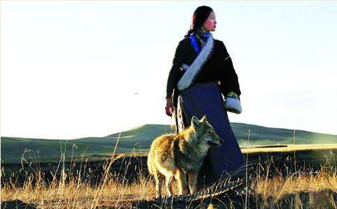

“还不能完全适应没有格林的
她是我要找的人，一个疯狂的人。
李微漪，四川画家，80后。她的介绍非常简单。她的故事非常不简单。如果你没听过，我愿意介绍给你听——
有一天，李微漪从川西北的若尔盖草原上抱回一只狼崽，一只父母被人杀死的狼孤儿，为它起名叫格林。
在成都的钢筋水泥森林里，小格林迅速长大。城市不是格林的乐土，李微漪无法容忍把它送到动物园关进笼子里，就做了一个疯狂的决定：带格林回草原，回到它出生的地方，让它重返狼群。
她就像母狼一样陪着格林狩猎，找到它出生时的狼洞，在野外长期露宿，直到粮尽援绝，靠着一点压缩饼干苦苦支撑，甚至做好成为狼群一道菜的思想准备，数次面临死亡威胁。
长成半大狼的格林狼性十足，智慧凶狠，但你绝想不到它对待人的情义之深。在“狼妈妈”病倒时，它会焦急地守在窗前；在“狼妈妈”被野狗群袭击时，它会挺身而出拼死血战；在大雪封路弹尽粮绝时，它会为“全家”带回猎物……
故事的结局，是在一个雪夜，格林不告而别。李微漪又等待了半个月后，确信她的格林找到并成功地融入了它的族群。
“最后一次见格林，他已经表现出和其他狼一样的对人警觉的状态，只是他还亲近我。为了让他淡忘与人的联系，我每次都克制自己去寻找他的念头。”她称呼格林时，永远用的是“他”，从来没有用过“它”。
在新浪的微访谈中，有网友问她：如果有一天狼族从这个世上消失，你会是怎样的感受？
她回答了四个字：心如死灰。
1， 自由是狼不可让步的权利问：我一直在琢磨这事，一个什么样的女孩会做这样的事情呢？是不是她本性里就有一种很天然很原始的力量？
李微漪：我倒也没觉得，可能是小狼在感动大家，我自己真的没什么。
问：最后一次见它，我看你还起了把它带回来的心，但最后还是把套上的铁链子又解开了。
李微漪：它和我一样，当时都很难受，都放不下。后来亦风（李微漪的男朋友）就说，它选择晚上独自离开，肯定是有道理的。爱和自由是冲突和对立的，自由是狼不可让步的权利，我估计要是把它硬带回来的话，完了它还是要走。
问：不能给它安一个追踪仪？
李微漪：不行，我们试过了，一是当时买不着，还有一个原因是如果格林身上有任何一点沾人味的东西或者特别的东西，狼群不接纳它。藏族人有个习惯，
我不愿用它的命来做试验。
问：那……以后再见到格林的概率会很低。
李微漪：其实今年5月的时候，扎西给我打电话，说他看到了！我用了8个小时的车程赶过去，可人家不可能在那儿等我。
我走的时候，托付扎西在三个固定的地点投食，周围用薄沙铺了一层。扎西对草原上的动物非常熟悉，有两个投食点看到狐狸和狗獾的爪印特别多，第三个投食点几乎没有动物去过，因为在那儿捆了一根我的腰带。一般来说动物害怕飘动的东西，特别是狼。所以能到这个投食点去吃东西的，肯定是格林。
扎西看到后，就赶紧喊“格林——”。他喊一次，它抬一次头。扎西特别激动，但隔得太远了，再加上狼过季换毛，外形上应该变化很大。扎西说，如果你要等它的话，你住到我的牧场来，我觉得它只要活着，迟早会来的。
问：这样听了心里安慰多了，有希望就好！
李微漪：是。但这个信息我没敢在微博里面发，特别是现在又是旅游季节，怕大家会跑到草原上喊。我一个人喊不到，一万人总会把它喊出来吧，我就担心。等不再折腾这些事了，想要观测到它，我会长期地呆在那里。
2 ，只要把你当家人，狼就会对你负责问：有一段印象特别深，就是在狼山，几乎是弹尽粮绝的情况下，你和亦风对食物无限渴望，就去“偷”格林埋在雪里的存粮，把人家的兔子切了一半又包了些压缩饼干放回去埋好。
李微漪：（笑）对，那个时候实在是太饿了。
问：格林终于饿到动用它的存粮的时候，刨开一看就倒下了，然后又迅速站起来，把剩下的兔子和压缩饼干风卷残云地吞下去。这个画面特别有喜感，是真的吗？
李微漪：（笑）这是真的，这是真的。当时它就像被绳子拽了一下，砰地就倒下去了，然后赶紧爬起来吃掉。
问：它肯定不能相信“妈妈”怎么能干这种事情！但让我无
李微漪：是，但它也不是每次，只是有时候，它觉得良心发现了，或者“狼心发现”了，它就给你叼一个来，一般一两个星期存一次，它要是次次都这样，那就不是狼了，成猎狗了。
问：即使是这样，我也觉得格林是一只伟大的狼。
李微漪：其实狼性真就是这样的。有一个纪录片，有一只公狼打了两只兔子回去，母狼有一窝小崽要带，它们都饿了好几天了。公狼给了母狼一只兔子，可母狼把另一只也抢了，又把公狼赶出去。公狼明明很强大的，但它饿着肚皮又去找猎物，为什么呢？因为有更重要的任务——
问：但在养狼的起初，你其实也怕过，看见小家伙吃了牙膏口吐白沫的样子，还有它无意中舔到你切破手流出的血时，它眼神都变了，读到那儿说实话我当时觉得瘆得慌。
李微漪：你看书都觉得瘆，你想当时我自己一个人和一条狼在一起啊，没别人知道。刚抱回来的时候人家生着病，很孱弱，长得和小狗似的，最开始我没害怕。直到它活过来了，一天天像吹气球一样长大，明显感觉到对它成长力量的恐惧，长成大狼之后会不会长成“白眼狼？”但慢慢了解了，爱和信任就越来越多。
问：我不知道所有的狼都这样，还是恰巧你遇到了一只重情重义的？
李微漪：我个人认为所有的狼都是这样。除了那种被圈养的有点变态，长期渴望自由而得不到的。狼有个共性，可以接纳别的小狼，不是它亲生的，无所谓，只要你进我的群体来，都会爱护你。大狼在争食的时候，公狼和公狼斗，母狼和母狼斗，但小狼可以随便进来吃，没有任何一只狼会阻止它。
3， 重返狼群中最大的困难是饥饿问：帮助格林重返狼群的过程中，最大的困难是饥饿吗？我记得你坚持不住的时候给亦风发短信：我饿，我在草原。
李微漪：对。一来没想到会呆那么长时间，二来在高原，一个人不背东西平地负重都是20公斤，你要再背着很多东西体力透支更大。而且那次遇到一个意外，那个大狼去探了我的营，把我的东西全吃了。
问：但第二次和亦风去狼山，可是拉了满满一车的食物。
李微漪：是以压缩饼干为主。原来我们以为它耐饿，后来发现坑人哪！反而是扎西教我们的风干肉才是真正有道理的。
问：让格林重返狼群你做到了，但随后你能不能再融入到人群、城市化的生活中来，也是大家比较关注的问题。
李微漪：我相信能够，没有什么不适应。为什么我老爱去草原，亦风也问过我，我说因为那儿没什么人，再加上我是画画儿的，可能和现在城市里追名逐利的不是一类人吧，我老爱宅在家或者接触一些朴素、单纯的人。在重返狼群的过程，一直都有亦风陪着我，所以不光是看到过狼性，同时也看到了人性很美好的一面。这两个不相悖。不是说接受了狼性就完全灭失人性，只不过很多人太匆忙去追赶一些东西，所以不知不觉中他原本纯真的东西就失去了。就像草原人，他接触的外来文化太多了，一些本源的都失去了，但他自己都可能没有感觉到。
问：你讲的这些故事里面，很多地方都在反观人性。可能和狼比起来，人在很多地方都不如它。就像你找到一只死羊，开始主人还说反正我们也不要了，你扛走吧，后来就改主意了，不仅把你身上的钱都留下来，还要了你的望远镜。
李微漪：是，遇到过。其实我写到的草原深处的藏民，更像几十年前或者十几年前的生活状态，很少接触外界，生活是很缓慢的，像被封存了一样，他们非常淳，像那些老阿妈。越接近公路的，他们的性格变化、对人的态度、心理的变化越大。从草原深处到接近公路，就像这几十年的变化，一些牧民已经完全不一样了。
问：你说是不是现代文明或者外来文化给他们的负面影响更多一些？
李微漪：嗯，因为他们原本拥有一些东西，太久了，不知道珍惜，慢慢发现可以用它们换来外来文化中很稀奇的东西，于是大量地用来交换，交换，交换；再加上一些人进去后从事盗猎的勾当，在草原形成一个恶性的链条……
问：对草原的现状有没有什么好的办法或者建议？
李微漪：这个题太大了。中国这么多的人，有那么大的需求量，自然会拼命地想生产，这个生产不可避免会造成破坏，不光是若尔盖草原的载畜量过多，或者蒙古草原矿产开采的问题，人们的普遍